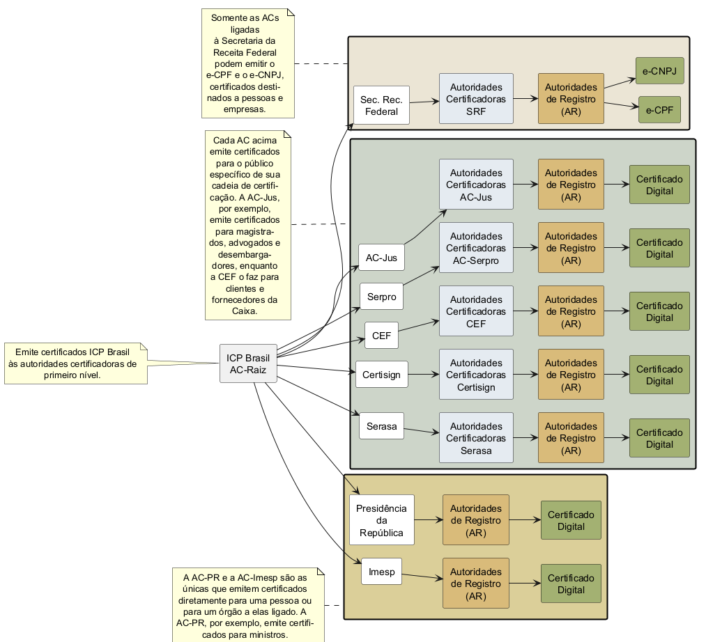

@startuml
!pragma layout smetana
skinparam defaultTextAlignment center
left to right direction
skinparam rectangle {
BackgroundColor<< white >> #FFFFFF
BackgroundColor<< blue >> #E4EAF0
BackgroundColor<< orange >> #D8BA7A
BackgroundColor<< green >> #A3B172
}
hide stereotype
rectangle "ICP Brasil\nAC-Raiz" as ACRaiz
note left: Emite certificados ICP Brasil\nàs autoridades certificadoras de\nprimeiro nível.
rectangle " " as SRFRet #EBE5D5;line:black;line.bold;text:blue {
rectangle "Sec. Rec.\nFederal" as SRF << white >>
rectangle "Autoridades\nCertificadoras\nSRF" as SRFCA << blue >>
rectangle "Autoridades\nde Registro\n(AR)" as SRFAR << orange >>
rectangle "e-CPF" as SRFeCPF << green >>
rectangle "e-CNPJ" as SRFeCNPJ << green >>
}
note left of SRFRet
Somente as ACs
ligadas
à Secretaria da
Receita Federal
podem emitir o
e-CPF e o e-CNPJ,
certificados desti-
nados a pessoas e
empresas.
end note
rectangle " " as ACRet #CCD4C9;line:black;line.bold;text:blue {
together {
rectangle "Serasa" as Serasa << white >>
rectangle "Autoridades\nCertificadoras\nSerasa" as SerasaCA << blue >>
rectangle "Autoridades\nde Registro\n(AR)" as SerasaAR << orange >>
rectangle "Certificado\nDigital" as SerasaCert << green >>
}
together {
rectangle "AC-Jus" as Jus << white >>
rectangle "Autoridades\nCertificadoras\nAC-Jus" as JusCA << blue >>
rectangle "Autoridades\nde Registro\n(AR)" as JusAR << orange >>
rectangle "Certificado\nDigital" as JusCert << green >>
}
together {
rectangle "Serpro" as Serpro << white >>
rectangle "Autoridades\nCertificadoras\nAC-Serpro" as SerproCA << blue >>
rectangle "Autoridades\nde Registro\n(AR)" as SerproAR << orange >>
rectangle "Certificado\nDigital" as SerproCert << green >>
}
together {
rectangle "CEF" as CEF << white >>
rectangle "Autoridades\nCertificadoras\nCEF" as CEFCA << blue >>
rectangle "Autoridades\nde Registro\n(AR)" as CEFAR << orange >>
rectangle "Certificado\nDigital" as CEFCert << green >>
}
together {
rectangle "Certisign" as Certisign << white >>
rectangle "Autoridades\nCertificadoras\nCertisign" as CertisignCA << blue >>
rectangle "Autoridades\nde Registro\n(AR)" as CertisignAR << orange >>
rectangle "Certificado\nDigital" as CertisignCert << green >>
}
}
note left of ACRet
Cada AC acima
emite certificados
para o público
específico de sua
cadeia de certifi-
cação. A AC-Jus,
por exemplo,
emite certificados
para magistra-
dos, advogados e
desembarga-
dores, enquanto
a CEF o faz para
clientes e
fornecedores da
Caixa.
end note
rectangle " " as PRRet #DBCE99;line:black;line.bold;text:blue {
together {
rectangle "Presidência\nda\nRepública" as PR << white >>
rectangle "Autoridades\nde Registro\n(AR)" as PRAR << orange >>
rectangle "Certificado\nDigital" as PRCert << green >>
}
together {
rectangle "Imesp" as IMESP << white >>
rectangle "Autoridades\nde Registro\n(AR)" as IMESPAR << orange >>
rectangle "Certificado\nDigital" as IMESPCert << green >>
}
}
note left of PRRet
A AC-PR e a AC-Imesp são as
únicas que emitem certificados
diretamente para uma pessoa ou
para um órgão a elas ligado. A
AC-PR, por exemplo, emite certifi-
cados para ministros.
end note
ACRaiz -down-> SRF
SRF -down-> SRFCA
SRFCA -down-> SRFAR
SRFAR -down-> SRFeCPF
SRFAR -down-> SRFeCNPJ
ACRaiz -down-> Serasa
Serasa -down-> SerasaCA
SerasaCA -down-> SerasaAR
SerasaAR -down-> SerasaCert
ACRaiz -down-> Jus
Jus -down-> JusCA
JusCA -down-> JusAR
JusAR -down-> JusCert
ACRaiz -down-> Serpro
Serpro -down-> SerproCA
SerproCA -down-> SerproAR
SerproAR -down-> SerproCert
ACRaiz -down-> CEF
CEF -down-> CEFCA
CEFCA -down-> CEFAR
CEFAR -down-> CEFCert
ACRaiz -down-> Certisign
Certisign -down-> CertisignCA
CertisignCA -down-> CertisignAR
CertisignAR -down-> CertisignCert
ACRaiz -down-> PR
PR -down-> PRAR
PRAR -down-> PRCert
ACRaiz -down-> IMESP
IMESP -down-> IMESPAR
IMESPAR -down-> IMESPCert
@enduml